学术部
策划每期主题与资料准备，撰写主持词和学术总结，协助对接校外专家学者。
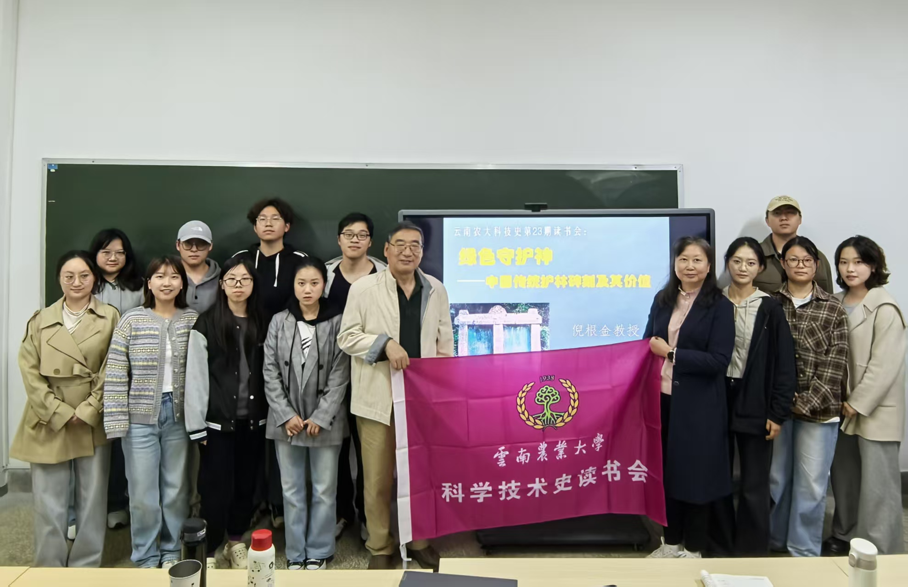
社团简介
以史为鉴，以读促思
科技史读书会成立于2021年，以“研读经典、传承文明、服务教学、辐射社会”为宗旨，长期开展科技史与传统文化领域的读书活动。
社团立足农科院校办学特色，推进思政教育与专业阅读深度融合、典籍研读与传统技艺体验相结合，连续承办两届“经典文献阅读与研究论坛”及全校纲要课读书报告会。
从一册经典出发，让阅读成为连接学术、文化与实践的共同现场。
未来，读书会将继续深耕经典文献，拓展学术视野，深化与思政课教学协同联动，推动活动在学术引领、文化育人和实践融合上不断发展。
TEAMS
从议题策划到现场执行，保障每一期读书会的学术质量。
策划每期主题与资料准备，撰写主持词和学术总结，协助对接校外专家学者。
开展活动前后宣传推广，制作海报、撰写报道并维护媒体联络。
负责场地、设备、签到、物料、考勤与档案管理，保障活动顺利开展。
ACTIVITY ARCHIVE
第十八期至第二十五期读书会
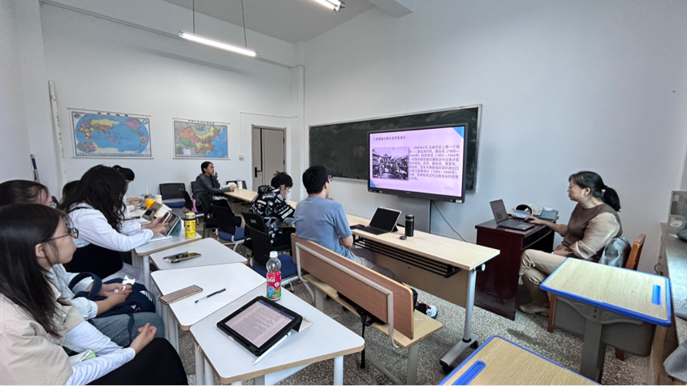
18
特邀马克思主义学院曹茂教授担任主讲嘉宾，科技史研究生线下参加，马理论本科生通过到梦空间同步参与。
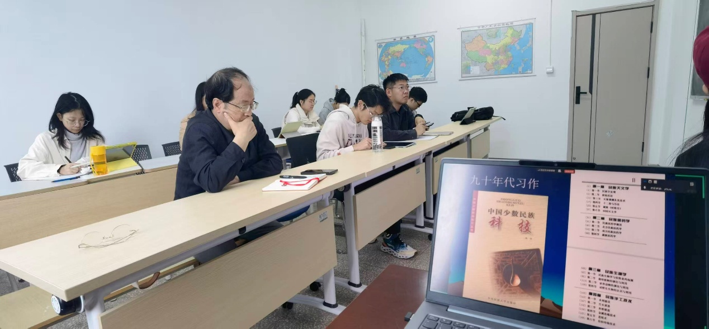
19
特邀中国社会科学院易华研究员进行线上讲座，师生线上线下共同参与交流。
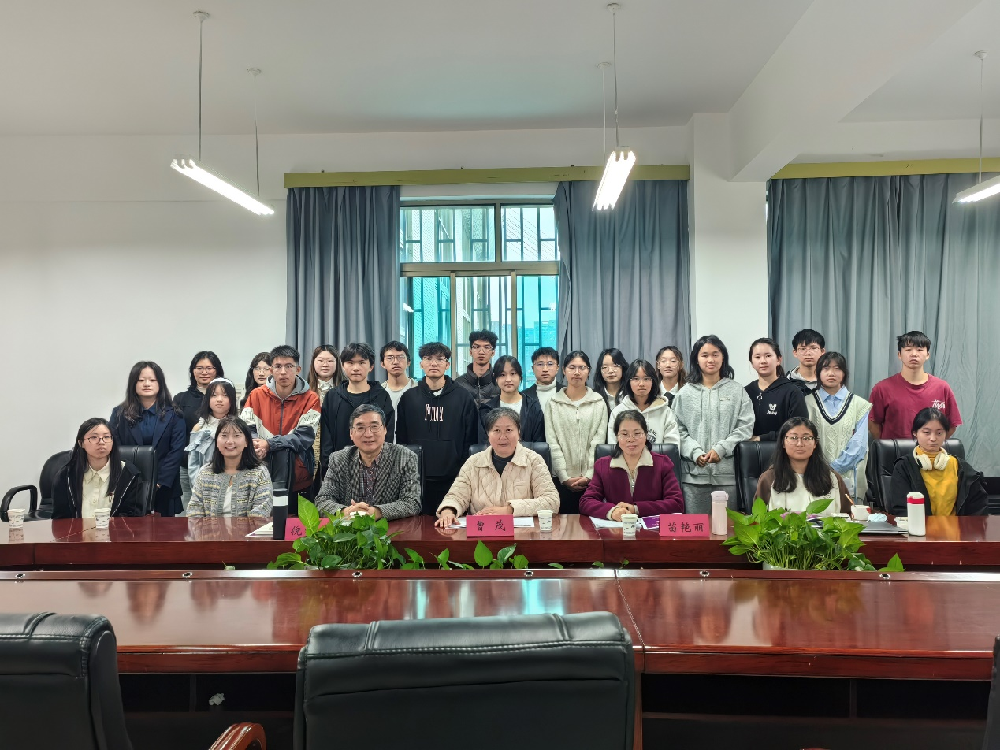
20
学生围绕抗战史著作开展阅读汇报，全校本科一年级21个教学班代表现场展示评比，科技史研究生参与学习交流。
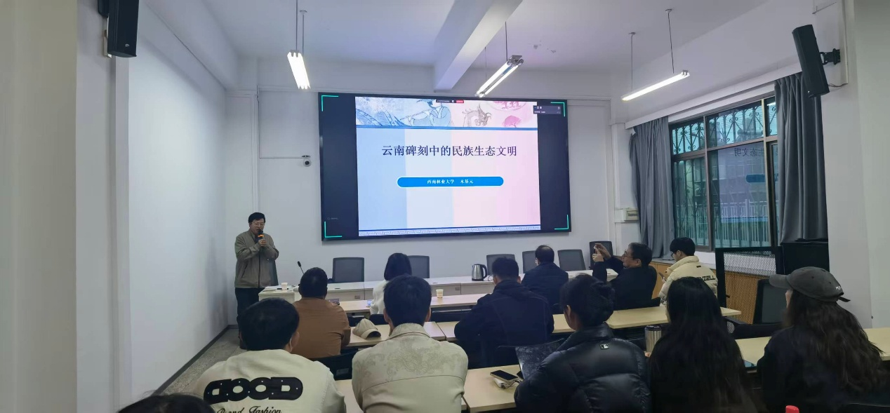
21
特邀西南林业大学木基元研究员担任主讲人，师生线上线下同步参与。
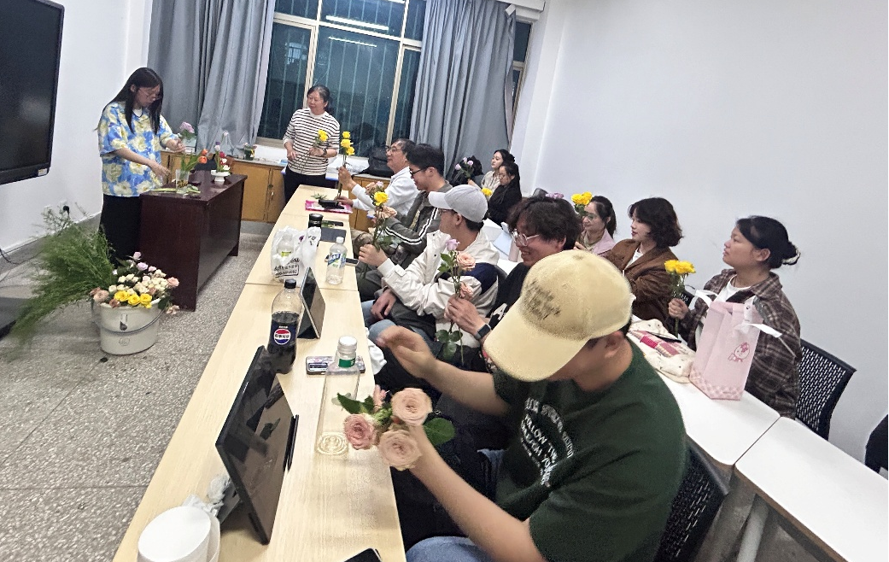
22
科技史硕士生黄忻瑶围绕明代张谦德所著《瓶花谱》作主题汇报，线上线下共同参与。
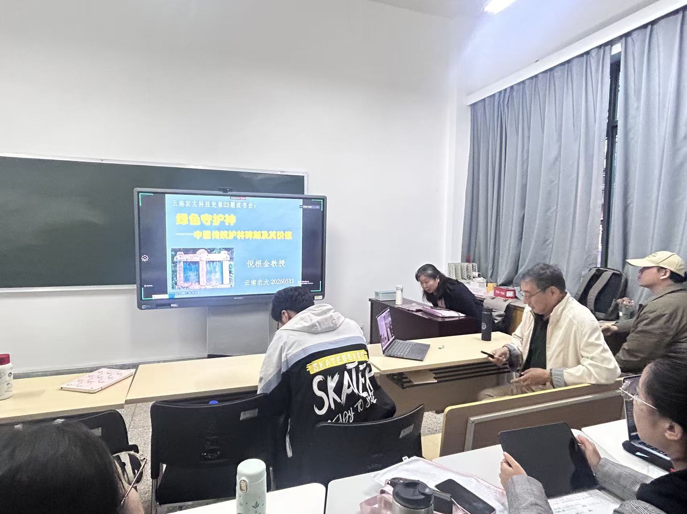
23
特邀银龄教授倪根金老师担任主讲人，读书会成员线下参加，其他学院师生通过腾讯会议同步参与。
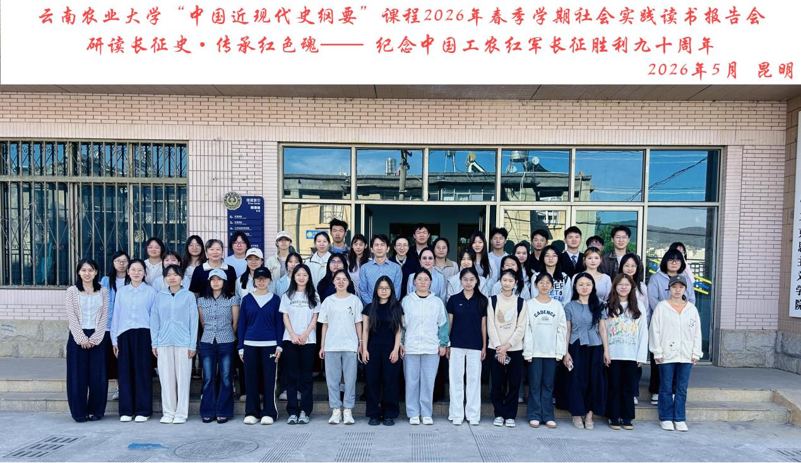
24
围绕长征史著作开展阅读汇报，23位学生代表参与现场评比，并邀请校外专家担任评审。
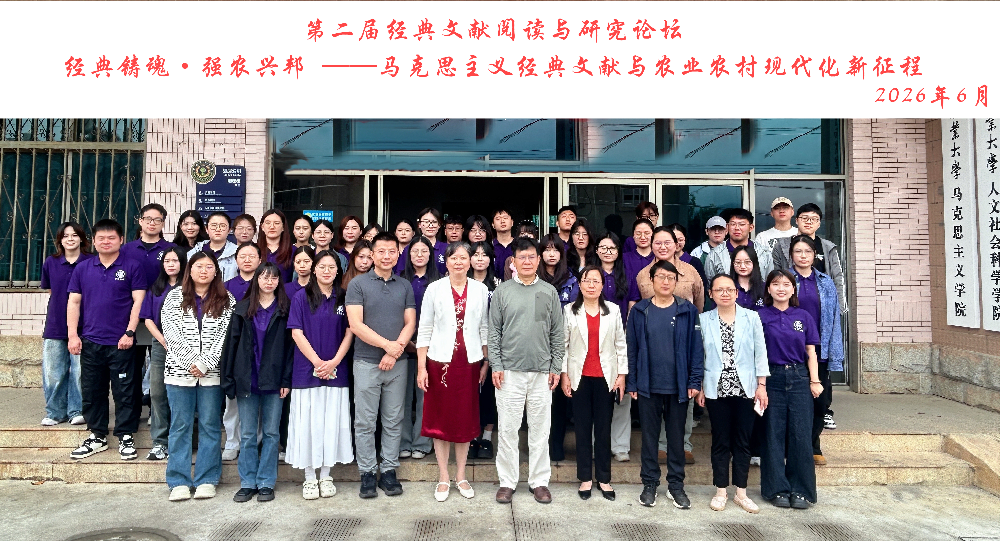
25
第二届经典文献阅读与研究论坛围绕马克思主义经典文献与农业农村现代化新征程展开，邀请多位专家参与评审。
MOMENTS
8 期活动影像记录
HONORS
见证社团建设与育人成果
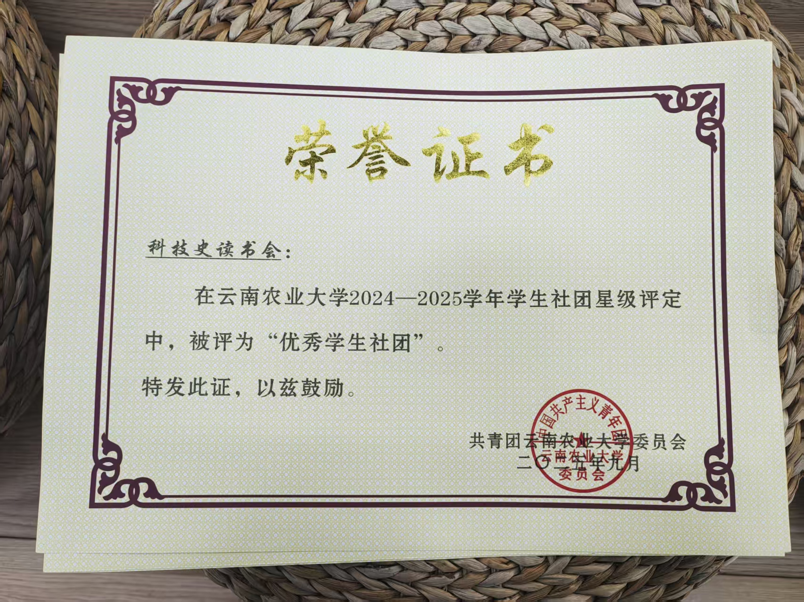
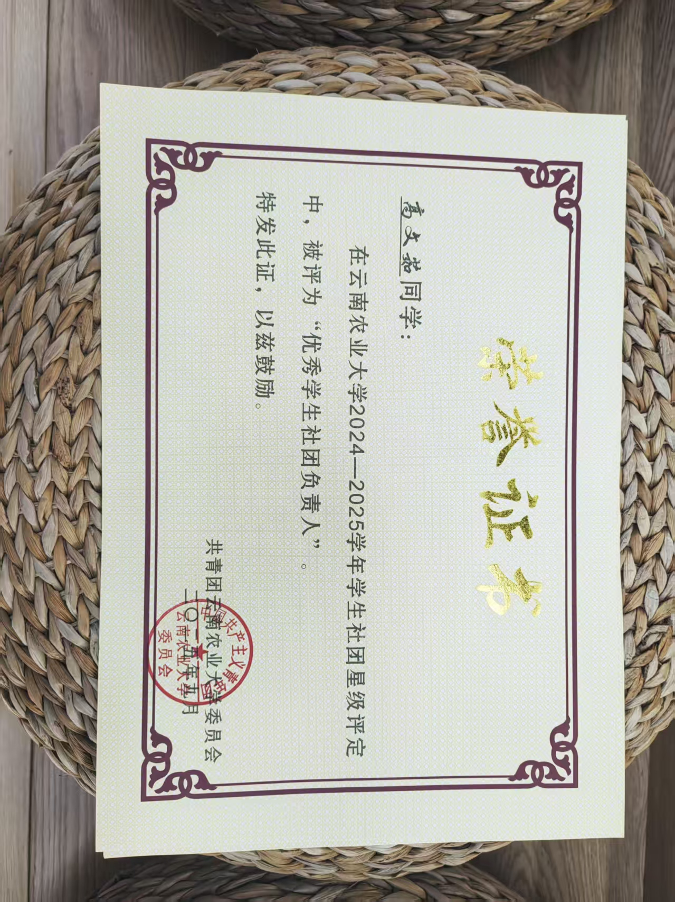
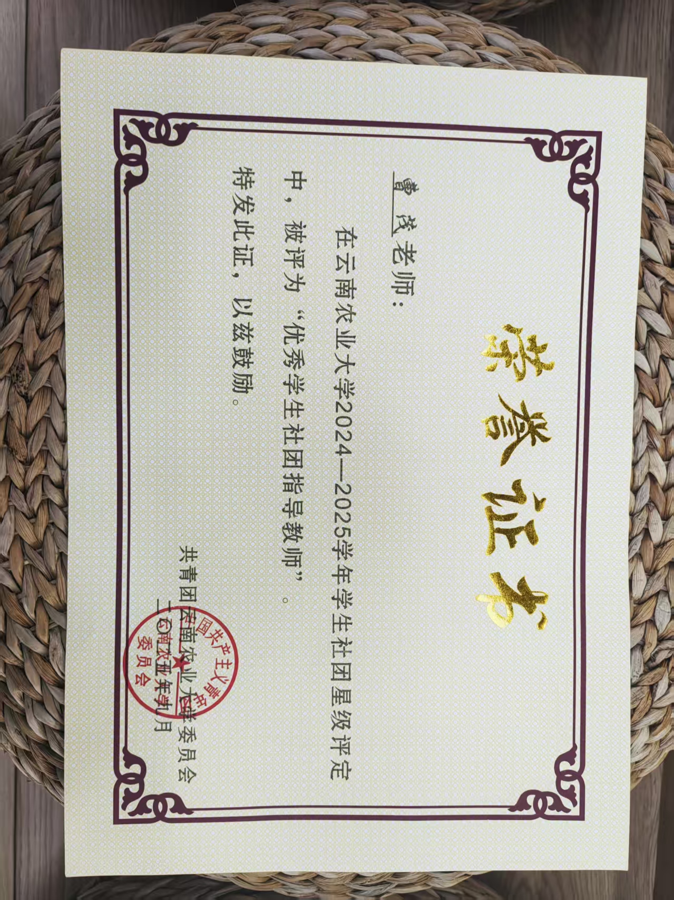